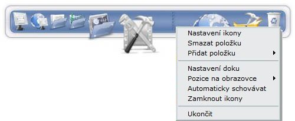

Vidìli jste nìkdy nìkoho, jak pracuje na MAC-ovi a líbíla se vám ta lišta s ikonami na spodku obrazovky tzv. "dock"? Pro ty kteøí nevidìli, jedná se o malou lištu, kterou mùete umístit na libovolnı kraj obrazovky a vloit do ní vaše nejpouívanìjší ikony a mnohé další. Smyslem RocketDocku je udìlat vám na ploše poøádek a zpøístupnit vaše ikony pøíjemnou a uhlazenou formou.
Afrikaans, Albanian, Arabic, Bangla, Brazilian Portuguese, Bulgarian, Catalan, Chinese Simplified, Chinese Traditional, Croatian, Czech, Danish, Dutch, English, Finnish, French, Galician, Georgian, German, Greek, Hebrew, Hungarian, Indonesian, Italian, Japanese, Korean, Norwegian, Persian, Polish, Portuguese, Romanian, Russian, Serbian (Cyrillic), Serbian (Latin), Sinhala, Slovak, Slovenian, Spanish, Swedish, Thai, Turkish, Ukrainian
Vìtšina uivatelù chce ihned po instalaci zaèít pøidávat ikony do Docku. Je nìkolik zpùsobù jak na to:
Mùete jednoduše vzít ikonu z plochy, prùzkumníka, panelu snadného spuštìní nebo Start menu a vloit ji do Docku.
Nebo staèí kliknout pravım tlaèítkem na Dock a dát Pøidat poloku.
Zde máte na vıbìr, co pøesnì chcete do Docku vloit.
Docklets jsou malé, jednoúèelové aplikace beící v Docku. Jsou to aplikace jako meøièe systémovıch prostøedkù - RAM, CPU, volné místo na disku. Nebo také pøedpovìï poèasí a další. Pøidání Docklets je velmi jednoduché, staèí je nahrát do sloky:
C:\Program Files\RocketDock\Docklets (vıchozí sloka)
Jakmile si nahrajete nìjaké Docklets, budou všechny dostupné pøes menu Pøidat poloku.
Poznámka: RocketDock podporuje Docklets pouze pro konkurenèní ObjectDock.
Nastavovat mùete pochopitelnì kadou poloku zvláš. Staèí na ni kliknout pravım tlaèítkem a dát Nastavení ikony.
Otevøe se vám okno, kde mùete mìnit veškeré nastavení dané poloky (ikony).
Zde uvidíte všechny sloky s ikonami, které máte k dispozici v:
C:\Program Files\RocketDock\Icons (vıchozí sloka)
Do této sloky mùete nahrát libovolné ikony, které budete chtít pouít v Docku. Tlaèítka + a - vám umoní pøidat a odebrat další sloky.
Zde vidíte všechny dostupné ikony ve sloce, kterou jste vybrali.
Zde je vidìt ikona pouitá u vybrané poloky.
Jsou dva zpùsoby, jak odstranit poloku z Docku. Staèí pouze vzít ikonu, kterou chcete smazat, vytáhnout ji na plochu a ona smizí. Druhá monost je kliknout pravım tlaèítkem na onu ikonu a dát "Smazat poloku".
Oddìlovaèe jdou mazat stejnım zpùsobem. Docklets však jdou smazat pouze prvním zpùsobem, tedy vzít a pustit na plochu.
Soubory a sloky mùete vkládat na zástupce v Docku stejnì, jako by byly na ploše.
Pokud chytnete soubor/sloku a "upustíte" ji na danou aplikaci v Docku, otevøe se soubor/sloka v této aplikaci. Napøíklad pokud vezmete soubor mp3 a pøesunete ho na zástupce Winampa ve vašem Docku, Winamp tento soubor otevøe.
Pokud vloíte soubor/sloku na zástupce sloky ve vašem Docku, soubor/sloka se do této sloky zkopíruje.
Pokud vloíte soubor/sloku na zástupce Odpadkového koše, bude soubor/sloka smazán(a).
Pokud máte zapnutou funkci "Minimalizovat všechna okna do Docku", všechna okna, která minimalizujete se objeví v Docku jako ikona. Chovají se jako bené ikony, ale nelze je z Docku odstranit pomocí drag 'n drop. Ve Windows Vista jsou renderovány jako náhled v reálném èase (napø. pøehrávaè videa), ale pouze pokud máte aktivovanou funkci Desktop Composition (v dobì pøekladu ještì nebyl znám èeskı název oné funkce).
Pøi kliknutí pravım tlaèítkem se obejví nabídka kde je moné "Otevøít aplikaci" a "Zavøít aplikaci". Z Docku se aplikace pøenese zpìt na popøedí pouhım kliknutím..
Pokud nechcete všechna okna minimalizovat do Docku, staèí podret Control a okno se minimalizuje jak jste zvyklí tzn. buï na lištu nebo do system-tray.
Nìkteré další nastavení je pøístupné po kliknutí pravım tlaèítkem na Dock.
Na vıbìr máte nastavení Pozice na obrazovce, Zamknout ikony a Automaticky schovávat. Dále je zde odkaz na nastavení, take ikona pro nastavení Docku není v lištì nutná.
V nastavení Docku se nachází tlaèítko "Vıchozí". Toto vrátí Dock do vıchozího nastavení, v jakém byl ihned po instalaci.
Poznámka: vaše poloky zùstanou zachovány.
Dock mùete doèasnì vypnout pomocí zkratky Control+Alt+R. Po opìtovném stisknutí se Dock znovu objeví.
V pøípadì dalších dotazù, mùete navštívit fórum. Na stránkách také mùete najít nìkolik uiteènıch návodù.
Pokud váš jazyk není podporován, nebo by jste rádi vylepšili stávající pøeklad vašeho jazyka, všechny potøebné informace najdete zde. Pokud by jste rádi pøeloili tuto dokumentaci do vašeho jazyka, prosím kontaktujte nás na fóru.
Doporuète náš software ostatním. Skvìlı zpùsob je umistìní našeho banneru na vaše stránky. Více informací na fóru.
Zde se nachází náš internetovı obchod Punk Software Swag Shack. Mùete zde koupit trièka, èepice nebo tøeba podloky pod myš. Èást vıdìlku poputuje k programátorùm Punk Software.